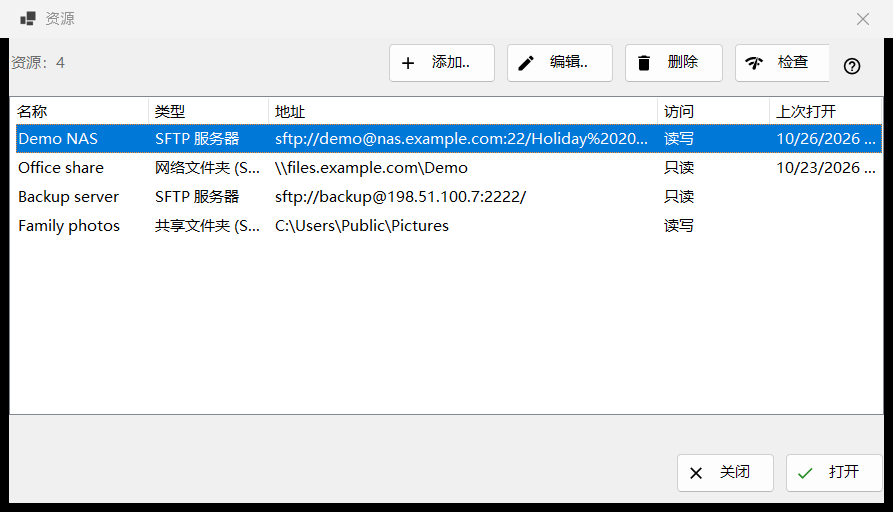
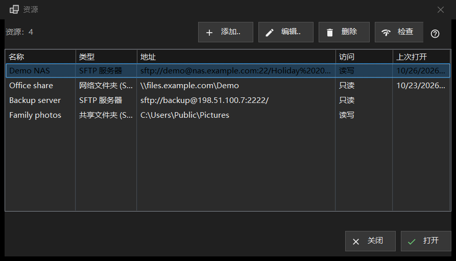

资源
用途说明
查看器可以打开的服务器和网络文件夹列表：SFTP 服务器、Windows 网络文件夹 (SMB)，以及 Share Manager 从这台电脑共享出去的文件夹。它从文件夹菜单中的「管理资源..」打开；同一份列表也位于设置窗口的「服务器和资源」页。


操作顺序
- 点击「添加..」并填写服务器信息，或通过「更多」按钮导入设置文件。
- 选中新添加的行，点击「检查」。
- 点击「打开」，或双击该行：查看器会连接并显示服务器的文件夹。
- 用「编辑..」修改地址或密码，用「删除」忘记一个资源。
界面元素
列表
列为：名称、类型、地址、访问和上次打开。类型是「SFTP 服务器」、「网络文件夹 (SMB)」或「共享文件夹 (Share Manager)」；访问显示「只读」或「读写」。列表下方有一行统计资源数量；没有资源时，窗口会显示一条提示和一个「添加..」按钮。编辑、删除和检查（以及资源窗口底部一行中的打开）需要先选中一行；在此之前，它们的工具提示是「请先在列表中选择一个资源」。
添加.. 和 编辑..
「添加..」打开新资源的表单，「编辑..」打开所选资源的表单。在其中输入的密码会按你的 Windows 账户加密保存，绝不会存放在列表本身中。
删除
「删除」会先询问，默认答案是「否」。提示会写明资源名称，并说明为它保存的密码也会一并删除，而服务器上的文件不受影响。
检查
「检查」会在不打开的情况下测试所选行。对于 SFTP 服务器，它会尝试该资源所有已知的地址，并把每个地址以 host:port 的形式连同结论一并报告：只要有一个 SSH 应答，检查即成功；端口开放但不是 SSH 则为警告；没有任何应答则为失败。检查不会发送密码。对于网络文件夹，它使用已保存的密码打开共享并读取其顶层文件夹；如果没有保存密码，会提示你通过「编辑..」输入。对于 Share Manager 行，它只查看该文件夹是否存在于这台电脑上。
打开
「打开」或双击某一行，会把该资源交给查看器，由查看器连接并显示其文件夹。如果没有保存密码，或保存的密码被拒绝，会先弹出一个小窗口询问密码。